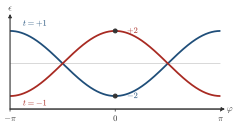
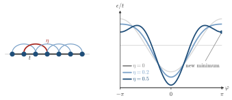

Advanced Quantum Materials 2027 · All lectures · Lecture notes
Session 2. Symmetries, Tight-Binding Band Structure Theory, and Effective Models
2.5 Bloch’s theorem and the first band structure
Let us now do this fully explicitly for the one-dimensional tight-binding chain,
\[H = -t\sum_n \left(c_n^\dagger c_{n+1} + \text{h.c.}\right). \tag{2.5}\]
We take \(t>0\) in all of this session, the same sign convention as in (1.6) of Session 1.
Since \([H,T]=0\), we look for eigenstates that are a superposition over all sites that transforms in a simple way under translation,
\[|\Psi_\varphi\rangle = \sum_n e^{in\varphi}\, c_n^\dagger|0\rangle. \tag{2.6}\]
It is cleaner to invert this relation and to define new operators that are labelled by \(\varphi\) instead of by site,
\[\Psi_\varphi^\dagger = \sum_n e^{in\varphi}\, c_n^\dagger, \qquad c_n^\dagger = \sum_\varphi e^{-in\varphi}\, \Psi_\varphi^\dagger, \tag{2.7}\]
which is an ordinary Fourier transform between real space and the space of Bloch phases. Putting (2.7) into (2.5) gives
\[\sum_n c_n^\dagger c_{n+1} = \sum_{n,\varphi,\varphi'} e^{-in\varphi}\,e^{i\varphi'(n+1)}\, \Psi_\varphi^\dagger \Psi_{\varphi'} = \sum_{\varphi,\varphi'} e^{i\varphi'}\,\delta_{\varphi\varphi'}\, \Psi_\varphi^\dagger\Psi_{\varphi'} = \sum_\varphi e^{i\varphi}\, \Psi_\varphi^\dagger\Psi_\varphi,\]
where the sum over \(n\) gave the orthogonality relation \(\sum_n e^{in(\varphi'-\varphi)} = \delta_{\varphi\varphi'}\). The Hermitian conjugate term gives the complex conjugate phase, so
\[H = -t\sum_\varphi \left(e^{i\varphi}+e^{-i\varphi}\right)\Psi_\varphi^\dagger\Psi_\varphi = \sum_\varphi \epsilon_\varphi\, \Psi_\varphi^\dagger\Psi_\varphi, \qquad \boxed{\epsilon_\varphi = -2t\cos\varphi}. \tag{2.8}\]
This is our first band structure, and we obtained it without writing down an infinite matrix, and without diagonalizing it. We only needed the fact that the eigenstates must have a definite phase under translation, and then a single Fourier transform gave the rest.
Some features of this dispersion should be discussed explicitly, since they appear again and again in the course. Near the bottom of the band (\(\varphi=0\)), \(\epsilon_\varphi \approx -2t + t\varphi^2\), which is a parabola that opens upward. Near the top of the band (\(\varphi=\pi\)), we write \(\varphi=\pi+\delta\) and obtain \(\epsilon_\varphi\approx 2t-t\delta^2\), which is a parabola that opens downward. The two curvatures have opposite sign. We define the effective mass in Section 2.9. With it, this means that low-energy quasiparticles near the bottom of the band behave like ordinary electrons with positive mass, while those near the top behave like holes with negative mass. Near the middle of the band, at \(\varphi=\pi/2\) where \(\epsilon_\varphi\) crosses zero, the dispersion is closer to linear than to quadratic. This is a first sign of the Dirac-like physics that we will see in detail in Section 2.11. All of this is shown in Figure 2.2, which also shows the density of states of this band.

In this session \(t>0\) in (2.8). At which phase would the minimum of the band be if the hopping had the opposite sign?
Show the answers
- A. ✓ True
This is true. The sign change turns \(\epsilon_\varphi=-2t\cos\varphi\) into \(+2t\cos\varphi\), which is the same curve upside down. The minimum then moves from \(\varphi=0\) to \(\varphi=\pi\).
- B. ✗ False
This is false. For \(t=-1\) the energy at \(\varphi=0\) is \(+2\), which is the top of the band. The bottom is \(-2\), at \(\varphi=\pi\).

The band \(-2t\cos\varphi\) for \(t=+1\) and for \(t=-1\). The second curve is the first one turned upside down, so the energy at \(\varphi=0\) is \(-2\) for the first and \(+2\) for the second. - C. ✗ False
This is false. At \(\varphi=\pi/2\) the energy is \(0\) for either sign of \(t\), since \(\cos(\pi/2)=0\). This is the middle of the band and not its bottom.
The sign of the hopping decides which end of the zone has the lowest energy.
Notebook check-in: session2.ipynb, “One dimensional chain” (Core)
Build the chain of (2.5), diagonalize it numerically, and check that the numerical spectrum follows \(\epsilon_\varphi=-2t\cos\varphi\) from (2.8) when you scan \(\varphi\) across the Brillouin zone.
A natural extension is to check that the same method also works beyond nearest-neighbor hopping. We add a second-neighbor hopping term \(-\eta\sum_n(c_n^\dagger c_{n+2}+\text{h.c.})\) to (2.5). This term has the same translational symmetry as before, so the eigenstates (2.6) do not change at all, and we only need to compute the eigenvalues again. We repeat the Fourier substitution for the new term, which couples \(c_n^\dagger\) with \(c_{n+2}\) and so gives a phase \(e^{\pm2i\varphi}\) instead of \(e^{\pm i\varphi}\), and we obtain
\[\epsilon_\varphi = -2t\cos\varphi - 2\eta\cos(2\varphi). \tag{2.9}\]
Schematic 2.6 shows the chain with its two hoppings, and the band of (2.9) for three values of \(\eta\).

What is the energy of (2.9) at \(\varphi=\pi/2\)?
Show the answers
- A. ✗ False
This is false. Take \(t=1\) and \(\eta=0.2\). The first term vanishes, but the second gives \(-0.4\cos\pi=+0.4\), which is not zero.
- B. ✓ True
This is true. The nearest-neighbor term vanishes, since \(\cos(\pi/2)=0\). The second-neighbor term gives \(-2\eta\cos\pi=+2\eta\).
- C. ✗ False
This is false. For \(\eta=0.2\) we get \(-0.4\cos\pi\), and since \(\cos\pi=-1\) the result is \(+0.4\) and not \(-0.4\).
The second-neighbor term has the phase \(2\varphi\), so it is not zero where the first one is.
Notebook check-in: session2.ipynb, “One dimensional chain, with longer range hopping” (Core)
Add the second-neighbor hopping \(\eta\) to the chain from the previous box, and check that the band you compute numerically agrees with (2.9). It is also useful to check the density of states of Section 2.9 here. The hopping \(\eta\) can create a second local extremum in \(\epsilon_\varphi\), and with it one more Van Hove singularity in the spectrum.
Try it. Put the second neighbor hopping in the second place of tij, for example tij=[1.0,0.3,0.0], and compare the band with (2.9). Increase it to \(0.5\), and check that the band gets an extra extremum and the density of states an extra peak. The notebook uses the opposite sign of the hopping, so its band is turned upside down.
The computational tool of the whole course is pyqula, a Python package that computes band structures such as this one in 1D, 2D, 3D and higher dimensions. It is installed with pip install pyqula, and the notebook is the place where you run the code of this section yourself.
- In Section 2.7 the same Fourier transform with several orbitals per cell gives a matrix, the Bloch Hamiltonian.
- The band of the chain at half filling gives the Lindhard function of Section 9.4, and its two Fermi points are the nesting of Section 9.4b.
- The sign convention \(t>0\) of (2.5) is also the one of the square lattice (2.14) and of the Kitaev chain of Section 5.16. The dimer (1.2), the SSH chain (2.13) and the graphene form (2.19) write the hopping with a plus sign.